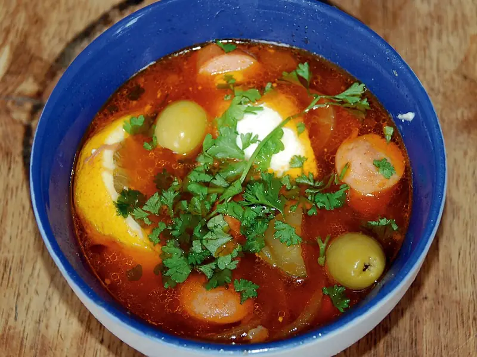

Фото: Roland Geider (Ogre), Public domain

Солянка мясная
Сборная мясная солянка с копчёностями, огурцами, маслинами и лимоном
120 мин6 порц.401 ккал на порциюБ 22 · Ж 31 · У 8Русская кухня
Продукты на 6 порц.
- Говядина400 г
- Вода2,5 л
- Ветчина200 г
- Сосиски4 шт
- Огурцы солёные3 шт
- Лук репчатый2 шт
- Томатная паста3 ст. л.
- Растительное масло2 ст. л.
- Оливки / маслины100 г
- Лимон0,5 шт
- Лавровый лист2 шт
- Соль1 ч. л.
- Перец чёрный молотый1 щеп.
- Сметана 20% по желанию6 ст. л.
- Петрушка по желаниюпо вкусу
Как готовить
- Залейте говядину холодной водой, доведите до кипения на сильном огне, снимите пену. Варите на слабом огне 1,5 часа.
- Достаньте мясо, нарежьте соломкой и верните в бульон.
- Ветчину и сосиски нарежьте соломкой, огурцы - тонкими полосками.
- Лук нарежьте мелко и обжарьте на масле на среднем огне 5 минут до мягкости. Добавьте томатную пасту и огурцы, тушите 5 минут.
- Положите в бульон ветчину, сосиски и зажарку. Варите 10 минут на слабом огне.
- Добавьте маслины, лавровый лист и перец, варите 3 минуты. Попробуйте, солите только если нужно.
- Подавайте с ломтиком лимона, сметаной и зеленью.
Совет. Лимон кладите в тарелку, а не в кастрюлю: при варке он даёт горечь. Чем больше видов копчёностей, тем вкуснее.